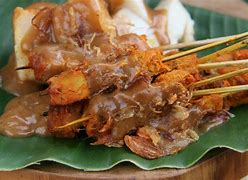

Sate Padang
Sate padang adalah sebutan untuk tiga jenis varian sate di Sumatra Barat, yaitu Sate Padang, Sate Padang Panjang dan Sate Pariaman. Sate Padang memakai bahan daging sapi, lidah, atau jerohan (jantung, usus, dan tetelan) dengan bumbu kuah kacang kental (mirip bubur) ditambah cabai yang banyak sehingga rasanya pedas.
